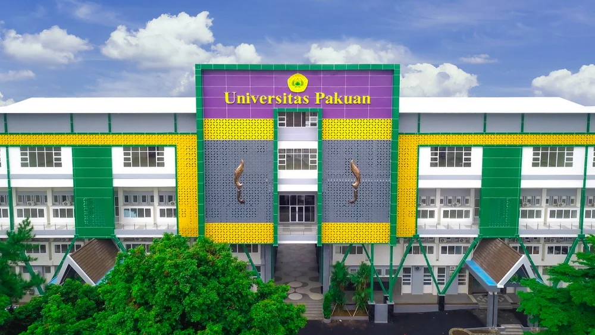

EDUCATION

BACHELOR OF COMPUTER SCIENCE 2022 – 2026
Universitas Pakuan
GPA 3.90 / 4.00
Undergraduate Thesis
Model Sortir Kelayakan Telur Dengan Convolutional Neural Network Berdasarkan Citra Cangkang Telur

My Academic Journey
2022
2023
2024
2025
2026
Started College
Began my journey as a Computer Science student at Pakuan University.

Academic Projects
Developed several academic projects and participated in competitions.

Assistant Lecturer
Joined as an Assistant Lecturer at Pakuan University.

Internship at DPRD
Completed an internship at DPRD Bogor and worked on web-based information systems.

Thesis & Graduation
Completed my undergraduate thesis and graduated with a GPA of 3.90/4.00 from Pakuan University.